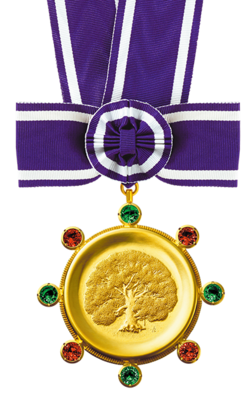
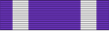

| The Kyoto Prize | |
|---|---|
 Insignia of the prize. | |
| Awarded for | Lifetime achievement in Advanced Technology, Basic Sciences, Arts and Philosophy |
| Location | ICC Kyoto |
| Country | Japan |
| Presented by | Inamori Foundation |
| Rewards | A diploma, a Kyoto Prize medal (20K gold), and prize money of 100million yen per category. |
| First award | 1985 |
| Website | www |
 Ribbon of the prize | |
The Kyoto Prize (京都賞, Kyōto-shō) is Japan's highest private award for lifetime achievement in the arts and sciences.[1][2] It is given not only to those who are top representatives of their own respective fields, but to "those who have contributed significantly to the scientific, cultural, and spiritual betterment of mankind".[3] The Kyoto Prize was established in 1984, and the laureates have been annually awarded since 1985. It is regarded by many as Japan's version of the Nobel Prize,[4][5] representing one of the most prestigious awards available in fields that are not traditionally honored with a Nobel.[6]
The prizes are endowed with 100 million yen per category and have been awarded annually since 1985 by the Inamori Foundation, founded by Kazuo Inamori. The laureates are announced each June; the prize presentation ceremony and related events are held in Kyoto, Japan, each November.[7]
The Kyoto Prize consists of three different categories, each with four subfields. The subfields rotate every year to create a diverse group of Laureates. The categories and fields are:
With the 2024 Kyoto laureates, the three-category prizes have honored 123 individuals and one foundation (the Nobel Foundation). Individual laureates range from scientists, engineers, and researchers to philosophers, painters, architects, sculptors, musicians, and film directors.
Laureates are invited to the Kyoto Prize Symposium in San Diego, California each March, and to the Blavatnik School of Government at the University of Oxford each May to give presentations on their work.[9]
Donald E. Knuth, one of the founding fathers of computer science, has been awarded the 1996 Kyoto Prize, Japan's equivalent of the Nobel Prize and the country's highest private award for lifetime achievement.
The Kyoto Prize is Japan's highest private award for lifetime achievement in advanced technology, basic science, and the arts and philosophy.
The Kyoto Prize is an international award to honour those who have contributed significantly to the scientific, cultural, and spiritual betterment of humankind. The Prize is presented annually in each of the following three categories: Advanced Technology, Basic Sciences, and Arts and Philosophy.
The Kyoto Prize, sometimes called Japan's version of the Nobel ... simultaneously recognizes the arts and philosophy, as well as scientific achievement.
The awards, often called the Nobel Prizes of Japan, are given by the Inamori Foundation.
Many of the prizes serve as precursors to a Nobel or fill in areas where a Nobel is unlikely to be awarded ...
{kind=link}
{kind=link}